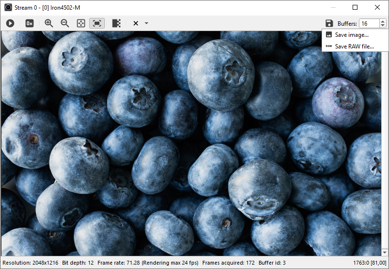
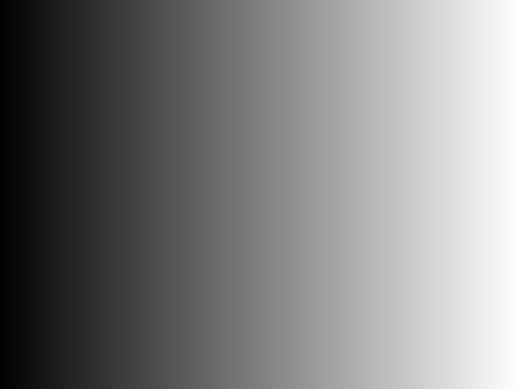

|
KAYA API Book 1.0
KAYA API Book
|
|
KAYA API Book 1.0
KAYA API Book
|

Figure 30 – Save Image menuThe following options are available:BMP – Windows Bitmap
PNG – Portable Network Graphics
TIFF (LSB) – Uncompressed tiff file containing complete video captured in allocated buffers.
TIFF (MSB) – Shifted uncompressed tiff file containing complete video captured in allocated buffers. This option saves a shifted image and is better for visualization.


Figure 31 – Saving tiff 10-bit image LSB (left) vs. MSB (right)RAW File – Single uncompressed RAW file containing complete video captured in allocated buffers.